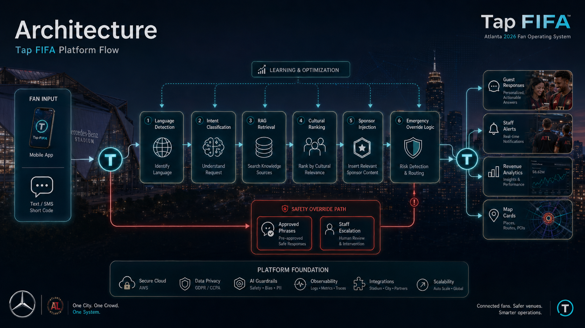

The media generation pipeline behind Tap FIFA — local engines for production-grade rendering, a remote AI provider for on-demand generation, and export profiles for every distribution channel.

Three local engines handle the heavy lifting — AI image generation, 3D scene rendering, and video encoding — all running on-device with GPU acceleration.
Template-driven workflows with queue-based execution. The orchestrator submits prompts to ComfyUI's API, polls queue and history for completion, and retrieves generated images.
Headless scene rendering for stadium visualizations, venue layouts, and promotional 3D assets. Automated via command-line with Python scripting.
Video encoding, image sequencing, format conversion, and post-processing. Handles the final mile from rendered frames to distribution-ready media.
Generated media is automatically exported in the right format for every distribution channel — from web to stadium billboards.
Optimized for web delivery. WebP/AVIF compression, responsive sizes, lazy-load friendly.
Platform-specific crops and aspect ratios for Instagram, X, TikTok, and Stories formats.
High-resolution CMYK-ready exports for tickets, programs, press materials, and signage.
Ultra-resolution exports for stadium LED boards, fan festival screens, and venue displays.
Full-quality source files preserved for archival, re-editing, and downstream pipelines.
On-demand AI generation at the edge. Image generation via Cloudflare's inference API, integrated into the orchestrator as a remote provider alongside the local engine stack.
Cloudflare API tokens and account ID are loaded from environment variables — never hardcoded, never committed.
Generated images are saved to output/providers/cloudflare/ on the local filesystem.
Text and structured responses are returned inline via the API response body.
Two steps to bring the media pipeline online — configure the Cloudflare provider, then launch the orchestrator.
.\scripts\setup-cloudflare-workers-ai.ps1python -m uvicorn apps.orchestrator.main:app --port 8400 --reloadGET /v1/providers/cloudflare/statusPOST /v1/providers/cloudflare/runImmediately useful. Both local engines (ComfyUI) and the remote Cloudflare Workers AI provider can generate images today. Export profiles handle all downstream formatting.
The video generation route is enabled and wired. However, the local stack (Blender + FFmpeg) remains the primary video pipeline until the Cloudflare video model contract is finalized.